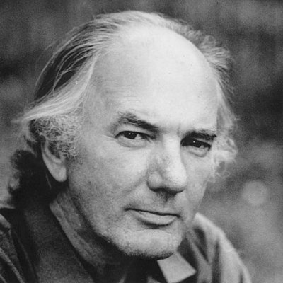

Thomas Bernhard [1931-1989]
Có một nhà soạn kịch nước ngoài đã vượt cả Berthold Brecht trong một mùa biểu diễn ở nước Pháp: 6 vở được dựng liên tiếp trên sân khấu. Nếu biết rằng từ mươi, mười hai năm nay không có mùa diễn nào ở Pháp không dựng một vở của ông, chưa nói đến những cuốn văn xuôi đều đặn ra mắt, thì sự hâm mộ rộ lên này thật đáng ngạc nhiên. Càng đáng ngạc nhiên hơn vì nhà văn này là một tác giả tự lặp lại! Chủ đề, giọng điệu, lời lẽ trong các tác phẩm của ông hầu như không thay đổi, chỉ khác đi những tình huống và hình thức biểu hiện. Qua miệng các nhân vật, chính là tác giả đang nói để bộc lộ những niềm căm uất của mình đối với thế giới hiện tại, và trên hết là với Tổ quốc của ông, nước Áo của Mozart!
Đấy là Thomas Bernhard, người đứng ở hàng đầu các nhà văn hiện đại, “nhà vô địch toàn năng” đã thắng tất cả các tác giả Pháp và nước ngoài thuộc thế hệ ông ở Pháp. Thomas Bernhard là con người thuộc loại bí ẩn nhất trong đời sống văn học, dù ông đã xuất bản 19 cuốn tiểu thuyết và cho dựng hàng chục vở kịch nổi tiếng. Cuốn Tự truyện của ông, trong đó ông vừa tự lộ mình vừa tự giấu, có thể giúp ta hiểu được mối hận thù thường trực trong lòng ông đối với một thế giới đảo điên, đối với cuộc sống vốn dĩ bất hạnh trên hành tinh này.
Sinh năm 1931 nhưng là con hoang, ông không được mang tên dòng họ của mình. Mẹ tái giá, ông về sống với ông bà ngoại - thời kỳ đáng yêu nhất trong đời ông. Ông ngoại là một nhà văn và nhà nghiên cứu suốt đời không thành đạt, một người vô chính phủ, và Bernhard thú nhận rằng chính ông ngoại đã dạy cho ông có thái độ chối bỏ và đứng ngoài cuộc! “Cả cuộc đời tôi do đó không là gì khác ngoài ý chí thường xuyên muốn quấy phá và khiêu khích”. Năm 1933, Bernhard về ở với mẹ và đi học, một thời kỳ đầy biến động đã thai nghén nên những hình tượng lớn sau này trong tác phẩm của ông: Những thiên tài cô đơn, sự giam hãm, một xã hội về thực chất là cực quyền, chủ nghĩa quốc xã và cơ đốc giáo…
Năm 1943, ông học nội trú ở Salzbourg và sau này đã thuật lại cái thế giới trại tập trung ấy, nơi ngay sau chiến tranh cây thánh giá ngự trị trên tường thay cho chân dung Hitler. 18 tuổi, ông mắc bệnh lao và bị bỏ nằm chờ chết, nhưng đã trốn được và qua khỏi. Từ đó, ý niệm về cái chết và bệnh tật không bao giờ rời bỏ ông. Và mọi sự vật chỉ còn là thức nuôi dưỡng lòng hận thù mà ông biểu thị qua miệng các nhân vật, sự tiến công không khoan nhượng vào nước Áo và những tập tục của nó, vào xã hội hiện tại, vào các nhà báo, chính khách, trí thức, thầy thuốc v.v. Tuy nhiên ông đã quyết định phải sống. Và viết. Những thành công đầu tiên đến trong những năm 60: tiểu thuyết Đóng băng (Gel,1963), Nhiễu loạn (Perturbation, 1967) và truyện ngắn Amras (1964).
Ông đi nhiều, sang Bồ Đào Nha, Tây Ban Nha, Hy Lạp… nhưng bao giờ cũng quay về đất nước quê hương mà ông ghét cay ghét đắng nhưng lại không muốn từ bỏ. Tại đấy, ông tiếp tục viết các tiểu thuyết Mỏ thạch cao (La Plâtrière, 1970), Trừng phạt (Correction, 1975), Người cháu của Vitghenxtanh (Le Neveu de Wittgenstein, 1987), Bê-tông (Béton, 1982), Những thầy giáo xưa (Maitres anciens, 1985)…v.v. cho tới cuốn sau cùng Dập tắt. Một sự sập đổ (Extinction. Un effond rement) - một cuốn sách ghê gớm mang tính dự báo! Giải thưởng tới tấp như mưa xuống, ông tới nhận mà vẫn chế giễu những người tặng giải cho mình! Ông thêm nổi tiếng về những vụ bê bối kiểu ấy. Ông mất ngày 12-2-1989 vì bệnh tim, cái chết được chờ đợi và có kế hoạch từ 10 năm rồi: Ông không muốn chết trong tay thầy thuốc lẫn trong tay báo chí.
Những tác phẩm sân khấu chiếm vị trí quan trọng ngang với tiểu thuyết trong đời văn của Thomas Bernhard. Hay có thể nói là trong ông, mọi cái đều là sân khấu, kể cả tiểu thuyết vì ông đã từng nói rằng “văn xuôi là một sân khấu trong đó từ ngữ là những nhân vật. Từ ngữ đi lại trên trang giấy như nhân vật đi lại trên sàn diễn…”. Sân khấu của Bernhard từ 1975 trở đi với vở Tổng thống (Le Président) là một sân khấu có tính chính trị, và càng rõ rệt hơn với vở kịch Trước khi rút lui (Avant la retraite, 1979), và tiến tới sự quá khích với vở kịch cuối cùng Quảng trường Henden (Hendenplatz, 1988) - trong đó ông cho những người Do Thái khẳng định rằng người Áo là quốc xã không trừ một ai. Bây giờ, đã có thời gian để bình tĩnh nhìn lại, ta có thể nói rằng sân khấu của Bernhard ngay từ đầu đã là một sự phản kháng lại một thế giới ung nhọt và trại tập trung (hãy nhớ lại tuổi thơ của ông), và những quan điểm chính trị của ông bắt rễ sâu chắc vào những gì ông đã nếm trải, mà chủ yếu là cay đắng và thất vọng.
Nhưng ngôn ngữ của Thomas Bernhard, may thay, lại là âm nhạc, cả trong thanh điệu lẫn cấu trúc. Ông cũng lặp lại mình trong cấu trúc tác phẩm như sự lặp lại những biến tấu âm nhạc, và chính điều đó khiến độc giả - khán giả như bị thôi miên một cách kỳ lạ: đọc xong hay xem xong “một Bernhard” người ta cảm thấy thanh thản như đã được tẩy rửa đầu óc. Quả thật là suốt đời ông muốn tẩy não con người khỏi mọi thực tế đáng buồn, đáng giận mà ông cho là cả xã hội phải chịu trách nhiệm, suốt đời ông theo đuổi hai đức tính là sự tỉnh táo và sự sáng suốt. Văn phong của Bernhard do đó thật hoàn mỹ, vừa cực kỳ cụ thể vừa giàu chất thơ.
Chối bỏ hoàn toàn xã hội đương thời - mục đích đó của đời ông có đạt được không, hãy để công luận và thời gian phán quyết. Song nhiều nhà văn Áo trước ông, như Musil, Broch, Schnitzler, Roth cũng nói về cùng những vấn đề ấy một cách tế nhị hơn. Họ cũng tố cáo những tật bệnh của “đất nước chim ưng hai đầu” (nước Áo) này, nhưng không mắc cái bệnh chủ quan muốn tiêu hủy sạch ấy, nó đã hạn chế tài năng và bóp méo nhân cách một nhà văn lớn như Thomas Bernhard.
KIM HẢI